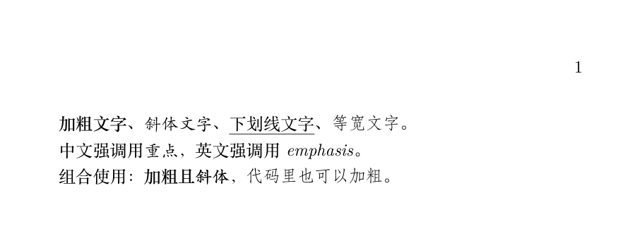
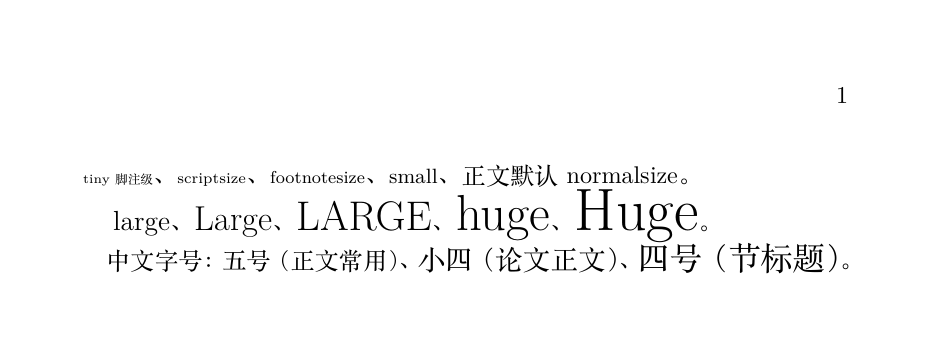
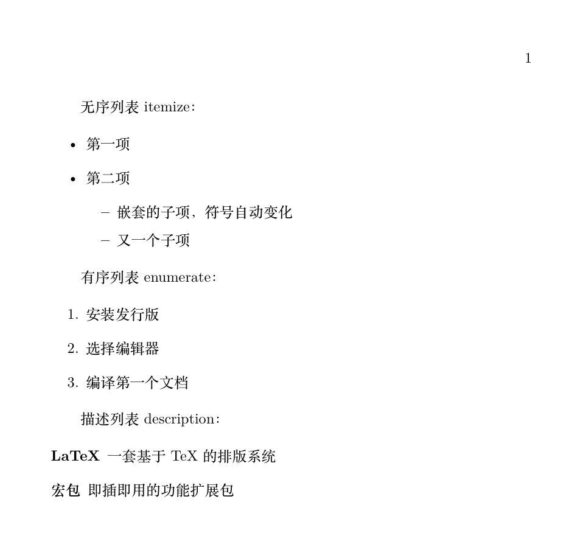
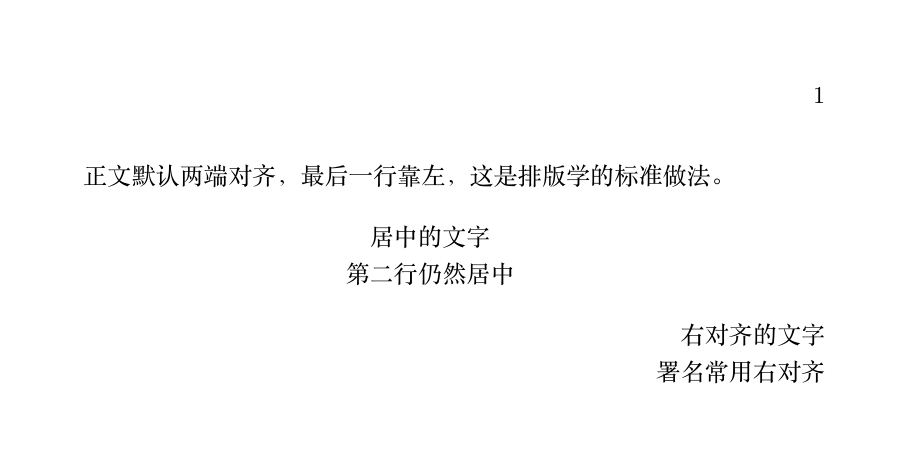

LaTeX 文字書式とリスト
この章では本文の「血肉」を扱います：フォントスタイルの切り替え方、フォントサイズの調整方法、3種類のリスト環境の使い方、配置方式の制御方法。
原則はこれまでと同じ：これらは意味論的なコマンドであり、LaTeXに「これは強調です」と伝えるだけで、具体的な見た目はドキュメントクラスが決定します。
フォントスタイル
よく使うスタイルは全部で5種類あり、いずれも「コマンド + 波括弧」の形式で、括弧内の文字に作用します。
| 効果 | コマンド | 説明 |
|---|---|---|
| 太字 | \textbf{...} | bold face |
| 斜体 | \textit{...} | 中国語は自動的に楷体にマッピングされます |
| 下線 | \underline{...} | 正式な組版では使用を控えること。欧米では斜体で代用するのが習慣です |
| 等幅 | \texttt{...} | typewriter、コード・コマンド・ファイル名専用 |
| 強調 | \emph{...} | インテリジェント強調：本文中では斜体になり、斜体中では立体になります |
例：フォントスタイル
\begin{document}
\textbf{太字の文字}、\textit{斜体の文字}、\underline{下線付きの文字}、\texttt{等幅の文字}。
中国語の強調には\emph{重点}、英語の強調には\emph{emphasis}。
組み合わせて使用：\textbf{太字かつ\textit{斜体}}，\texttt{コード内でも\textbf{太字にできます}}。
\end{document}

出力の細かい点に注目：中国語の「斜体」は実際には楷体として表示されます——漢字には斜体の伝統がなく、ctex が自動的に楷体で「傾斜」の強調機能を担います。これは正しいローカライズ処理です。
\emph と \textit の違いは「インテリジェント」にあります：すでに斜体の文字の中で、\emph は自動的に立体に切り替わり、コントラストによる強調を生み出します。論文を書くときは \emph を優先的に使いましょう。
内容の強調に下線を使ってはいけません——それはタイプライター時代の遺物です。学術組版での強調は斜体か太字で十分です。
フォントサイズ調整
欧文の文字サイズは「宣言型」コマンドのグループで、\tiny から \Huge まで全10段階あり、\normalsize を基準に比例拡大・縮小します。
| 小から大へ | コマンド |
|---|---|
| 1〜5段階（小） | \tiny、\scriptsize、\footnotesize、\small、\normalsize |
| 6〜10段階（大） | \large、\Large、\LARGE、\huge、\Huge |
例：フォントサイズと中国語の文字サイズ
\begin{document}
{\tinytiny 脚注レベル}、{\scriptsize scriptsize}、{\footnotesize footnotesize}、
{\small small}、本文はデフォルトで normalsize。
{\large large}、{\Large Large}、{\LARGE LARGE}、{\huge huge}、{\Huge Huge}。
% 中国語の論文では「号数」で直接指定する方が一般的：\zihao{号数}
中国語の文字サイズ：{\zihao{5}五号（本文でよく使う）}、{\zihao{-4}小四（論文の本文）}、
{\zihao{4}四号（節の見出し）}。
\end{document}

文字サイズコマンドは「スイッチ」であり「範囲」ではありません——\large を書いた後のすべての文字は、グループが終わるまで大きくなります。したがって必ず波括弧で囲んでください：{\large 大きな文字}とすれば、後ろの小さな文字は影響を受けません。
中国語の文書では \zihao{号数} を直接使うことをお勧めします：数字の前にマイナス記号を付けると「小○号」を表し、\zihao{-4} は有名な「小四」——国内の大学・研究機関の論文本文の標準文字サイズです。
3種類のリスト環境
リストは LaTeX で最もよく使う「環境」です（\begin と \end が対で現れます）。3つの環境は3つの意味に対応します。
| 環境 | 用途 | ラベル |
|---|---|---|
| itemize | 並列の要点、順序なし | 丸点・短い横線などの記号 |
| enumerate | 順序のある手順 | 1. 2. 3. 番号 |
| description | 項目の説明 | カスタム項目名 |
例：3種類のリストとネスト
\begin{document}
番号なしリスト itemize：
\begin{itemize}
\item最初の項目
\item2番目の項目
\begin{itemize}
\itemネストされた子項目、記号が自動的に変化
\itemもう一つの子項目
\end{itemize}
\end{itemize}
番号付きリスト enumerate：
\begin{enumerate}
\itemディストリビューションをインストール
\itemエディタを選択
\item最初の文書をコンパイル
\end{enumerate}
説明リスト description：
\begin{description}
\item[LaTeX]TeX ベースの組版システム
\item[マクロパッケージ]プラグアンドプレイの機能拡張パッケージ
\end{description}
\end{document}

ネストされたリストは追加設定が一切不要です：各階層で自動的にインデントされ、記号も段階的に変化します（丸点、短い横線、アスタリスク……）。最大4階層までネストできます。
デフォルトのリストは行間が広めで、論文ではスペースの無駄とされることがよくあります。enumitem マクロパッケージは細かい制御を提供します：
例：enumitem によるリストのカスタマイズ
\begin{itemize}[label=\textsquare, noitemsep] % 四角ラベル + 項目間の余分な間隔を除去
\itemコンパクトな番号なしリスト
\itemスペースが限られた場面に適する
\end{itemize}
\begin{enumerate}[label=(\alph*)] % 番号スタイルを (a) (b) (c) に変更
\item第一のポイント
\item第二のポイント
\end{enumerate}
配置（アライメント）方式
本文はデフォルトで両端揃え（justified）です。これは組版学上、長文書の標準的な做法であり、何の設定も必要ありません。
部分的に配置を変更する必要がある場合は、3つの環境を使います：center、flushleft、flushright。
例：中央揃えと右揃え
\begin{document}
本文はデフォルトで両端揃え、最後の行は左寄せです。これは組版学の標準的な做法です。
\begin{center}
中央揃えの文字\\2行目も中央揃え
\end{center}
\begin{flushright}
右揃えの文字\\署名は右揃えが一般的
\end{flushright}
\end{document}

| 書き方 | 特徴 | 適用場面 |
|---|---|---|
| \begin{center}...\end{center} | 環境形式で、上下の間隔が自動的に付く | 本文中で独立した段落としての中央揃え |
| \centering | 宣言コマンドで、追加の間隔は付かない | 図表のフロート環境内部（第8章参照） |
| \begin{flushright}... | 右揃え環境 | 署名、日付 |
まとめ
| 要件 | コマンド | 間違いやすいポイント |
|---|---|---|
| 太字 / 斜体 / 等幅 | \textbf / \textit / \texttt | コマンドは波括弧内にのみ作用する |
| 強調 | \emph | 中国語が楷体にマッピングされるのは正常な現象 |
| 文字サイズ変更 | {\large ...} または \zihao{n} | 波括弧を忘れると後ろがすべて大きくなる |
| リスト | itemize / enumerate / description | ネスト時は \begin と \end が対でなければならない |
| 中央揃え | center 環境または \centering | 両者で間隔の挙動が異なる |
クリックしてノートを共有
ノートはこの記事の内容を拡張したものである必要があります！
記事の投稿は、ここをクリックしてください
登録招待コードの取得方法
ノートを共有する前にログインが必要です！
登録招待コードの取得方法